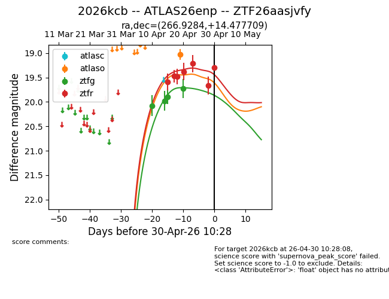
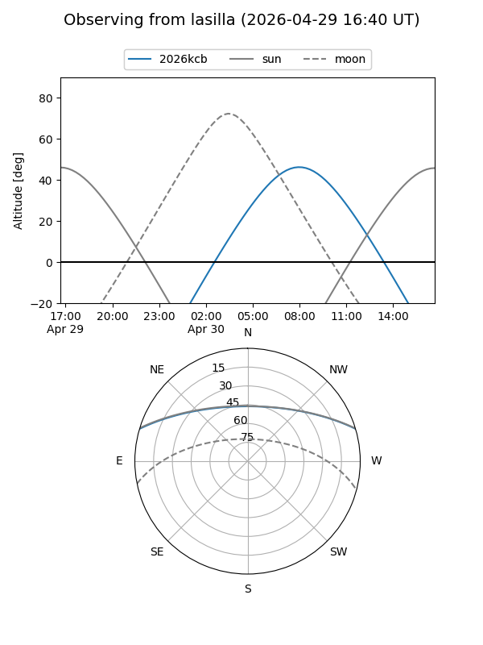
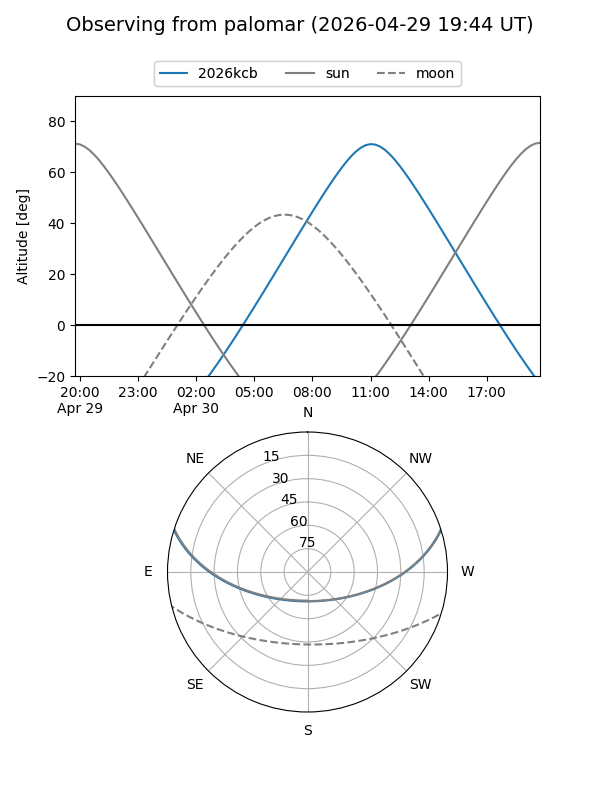
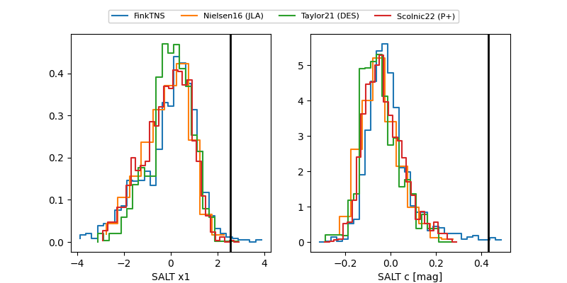

2026kcb
Target 2026kcb at 2026-04-30 10:33
Aliases and brokers:
FINK: link
Lasair: link
ALeRCE: link
TNS: link
YSE: link
alt names
ZTF26aasjvfy (ztf,fink_ztf)
2026kcb (tns,yse)
ATLAS26enp (atlas)
Coordinates:
equatorial (ra, dec) = 266.9284,+14.47771
equatorial (HMS+DMS) = 17:47:42.81,+14:28:39.75
galactic (l, b) = (39.1423,+20.51946)
Flags:
Photometry:
last atlaso=19.03, ztfg=19.73, ztfr=19.29
1 atlaso, 4 ztfg, 7 ztfr detections
Lightcurve

Visibility


Additional plots
